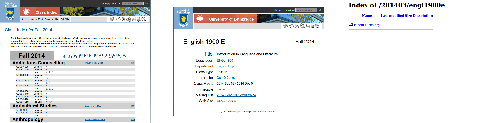
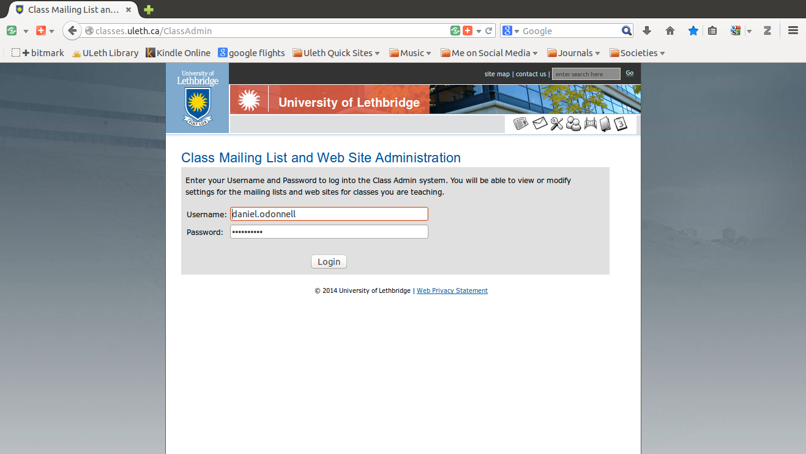
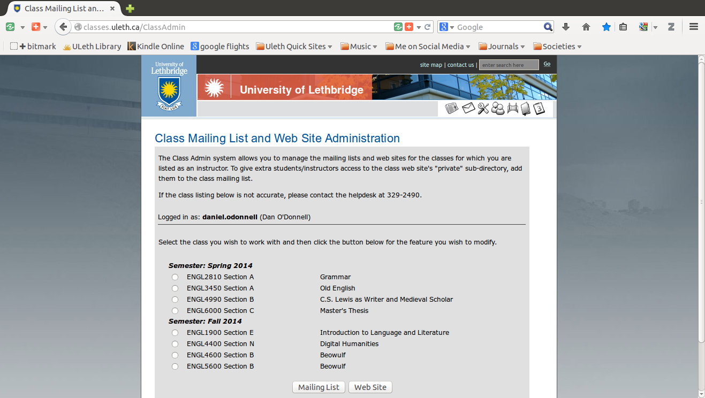
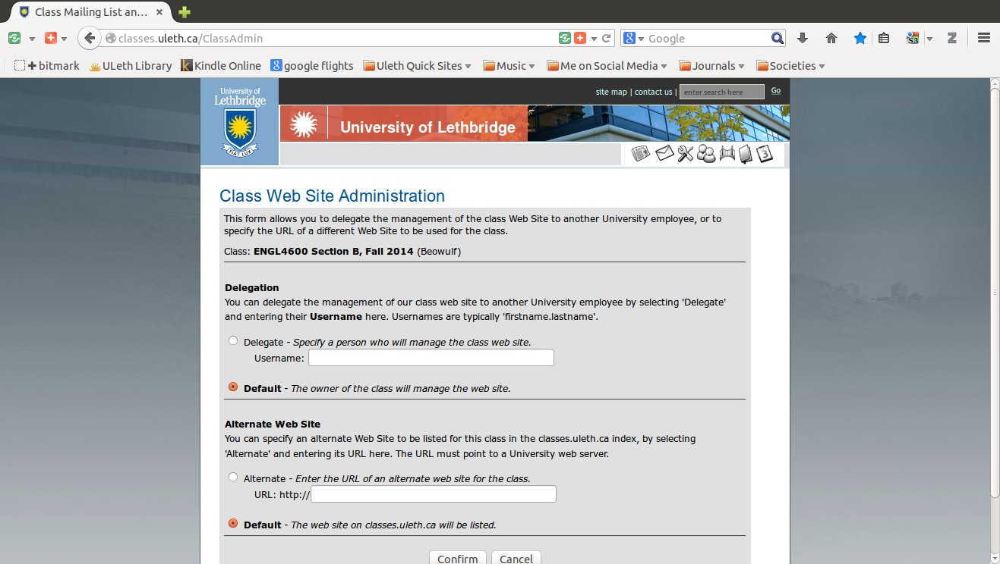
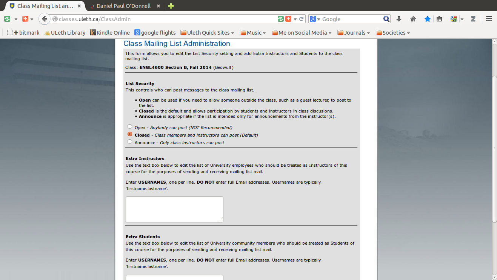

Managing class webpages and mailing lists at the University of Lethbridge
Posted: Aug 26, 2014 11:08;
Last Modified: Sep 16, 2015 12:09
Keywords:
For years, every class at the University of Lethbridge has been given webspace and a mailing list. The now also get a Moodle space. While the mailing list and Moodle space is well-known to instructors (it is the list “XXXXNNNNx@uleth.ca” that you use to make announcements to the class as a whole), the webspace is far less well known. This document (mostly a reminder to myself) shows you how you can use online tools to manage these resources.
Contents
If you do nothing
First thing is to realise what happens if you do nothing. A student you has found your course online through the registrar’s office and wants to know more about your section goes through the following depressing sequence:

The thing to realise is that this is bad for everybody. It tells the student nothing, meaning they might decide not to take your course (and even if they do, poor websites leave a bad impression). But if they persist, it is going to mean more work for you: the only thing they can do to find out what they were looking for is back up one page, then following the links for the instructor until they find your email address and send you an email asking about something you could have easily posted online.
So it is a good idea to get in the habit of fixing this space… even (and perhaps especially if) you have a class webspace elsewhere on the internet. This is a first port of call for many students. You can easily make it a helpful one.
Login
To manage your classes, you first need to login to the classes.uleth.ca admin page: classes.uleth.ca/ClassAdmin
There you will see the following login page:

A successful login will take you to a splash page which, apparently, shows you the current (or most recent) and upcoming semesters:

It is from this page that you will manage your mailing lists and class webpages.
Managing your class webpage
First thing to do is manage your class webpage.
You have three options here:
- delegate it to somebody else on campus (a student, the department administrator, etc.)
- redirect it to some other URL (e.g. an off campus blog, your on-campus personal space (people.uleth.ca/~$USERNAME)
- default to the current page (in which case you will add something to the current space)

Upload pages to your default webspace
The most difficult if the third option. This will require you to upload individual HTML pages to the space for this one class—and do it again year after year. If you want to post a PDF there, then you have to upload at least two pages (and maintain them by hand): an HTML page explaining something about the site and containing a link to the PDF page, and the PDF. This is very 1995 and so not something you want to get started on.
You so don’t want to do this, that I’m not even going to say how. If you really want to, call 2490 and ask IT for help. But seriously, you don’t want to do this.
Delegate to somebody else
This is really easy: you simply enter the uleth.ca username of the person you want to maintain the site (i.e. the bit before the @ in a uleth.ca email address). When you click save, this person now can manage your site for you.
This is just punting the problem, of course: the big difference is that now you delegate has to decide whether to upload a single page (which they probably still shouldn’t do, even if that is no longer your problem) or redirect somewhere else.
Redirect to another webspace
This is probably the best option: point the class space to somewhere else where it is easier to manage things. This could be an external blog that you use to manage your teaching (e.g. at wordpress.com or some other blog site), your personal uleth webspace (i.e. at people.uleth.ca/~$USERNAME), or even your class Moodle or Turnitin site.
Mailing list management
You can also manage your mailing list from here. You can change the posting permissions and the membership.

Posting permissions
Your options here are
- Anybody on the entire internet can post to your class mailing list
- Anybody who subscribes to your class mailing list (normally the instructor(s), T.A.s, and all registered students) can post to the list
- Only Instructors can post to the list
The first option is an invitation to spammers and should only be used under very special circumstances—so special in fact that I can’t think of any.
The second option is the default option and it works well for most.
The third option makes sense if you have trouble with students misbehaving on the list (e.g. sending spam or unauthorised messages) or if you want to deemphasise the list in favour of some other communication platform (e.g. the blog and forum capabilities in Moodle). If you select this, then the list becomes a one-way channel, useful for announcements for which you don’t want any feedback.
Subscription options
This is the important set of options. You can use this to add people to the default subscription list for your class (i.e. the teacher(s), T.A.(s), and registered students.
You have two options here:
- add additional teachers
- add additional students
The first option adds subscribers to the list who will have “teacher” privileges. This is only meaningful if you have set the posting privileges above to “teachers only.” Under those circumstances, any email addresses you add here still will be able to post. You might want to use this to add additional T.A.s (perhaps unofficial ones) or guest speakers to the list.
The second option is the one you are likely to use more often. This is where you can add additional, unregistered students (e.g. friends, members of the community, etc.).
If you keep the default permissions (i.e. that anybody subscribed to the list can post), then it actually doesn’t matter to which category you add people. The important thing is that you can add people to this important tool.
Adding TAs to Moodle
Another task you may need to do early on in the semester is adding TAs to Moodle. The instructions for doing that are here.
In short, however, the method is as follows:
- Go to the Moodle space for the class you want to add a TA to (i.e. log in to Moodle and select the class you want for your TA).
- Once you are inside the class, click on “Users” in the “Settings” block. On the University of Lethbridge’s default installation, this block is on the left hand side, bottom (in the default view) or second from the bottom (if editing is on).
- Clicking on “Users” expands the menu item. Under “Users” you will see “Enrolled Users.” Choose that.
- On the “Enrolled Users” dialogue screen, you will see a small button, “Enroll User” at the top of the form on the right hand side. Click that.
- In the dialogue that appears, select the type of user you are trying to enrol (in this case, that means Basic TA or Advanced TA) then using the search form, look for your TA’s name (they must be in the U of L’s system).
- After you click “search,” all users matching your search term will show up in the window. Find your TA and click on the “Enroll” button to the right of their name.
- Repeat the previous two steps for each TA you want to add.
When should you do this?
The best time to do this is just before the registration period opens for next semester. This is when students are going through the registrar site, looking for classes and the time when an appropriate redirect will have the maximum benefit.